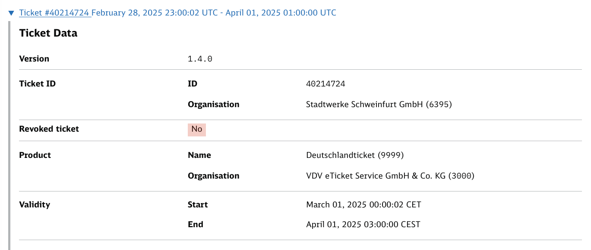
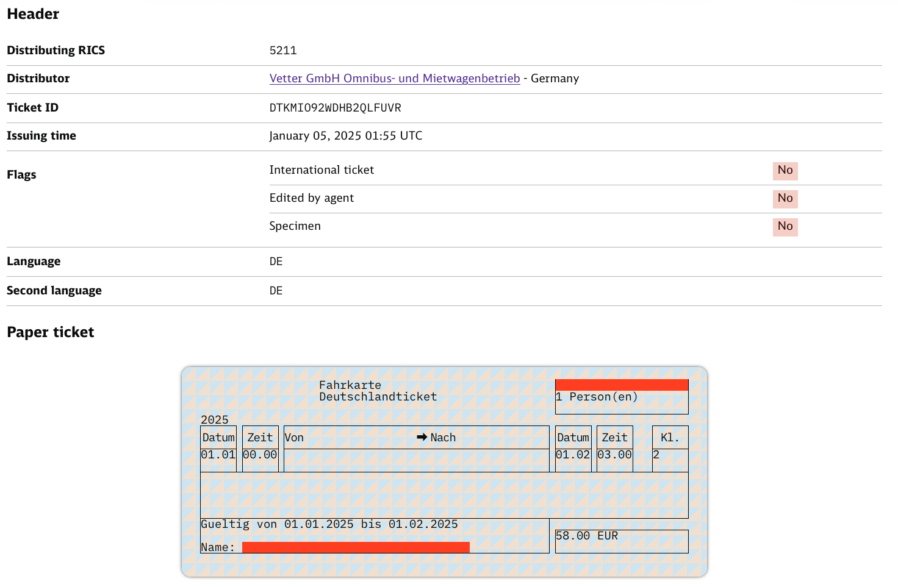
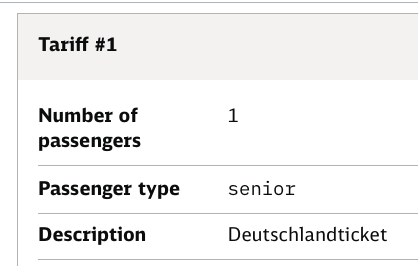
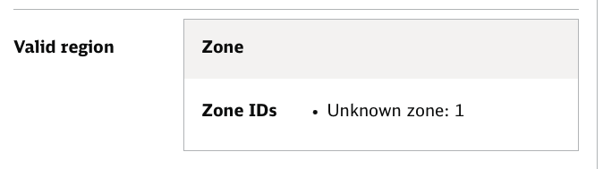
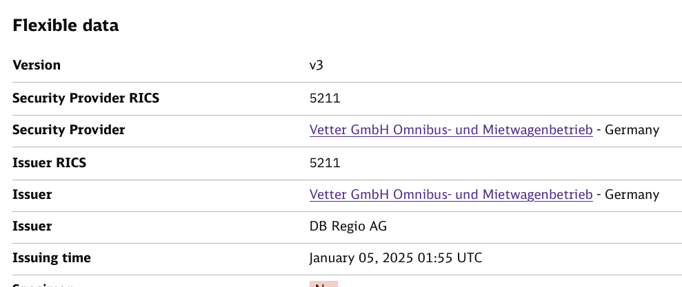
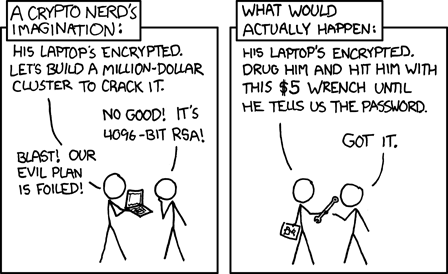

Secure Digital Ticketing
Lessons from the Deutschlandticket
Q Misell
8th Charter of Trust Meetup Germany
18th of March 2026
A spherical ticket
in a vacuum
The ideals
- Customers can buy tickets easily
- Transport companies are fairly compensated for their services
- Ticket control simple and effective
- Fraudsters excluded
How can one defraud the system?
-
Payments fraud
- Relatively low-skill
- Low resources needed
-
Cryptographic fraud
- Harder to execute
- Much more skill required
- Harder to detect
Payments Fraud
A case study
D-Tickets over Telegram
- Paying via PayPal Friends & Family
- Received a PDF of a screenshot of Apple Wallet
- Surely this is totally legit?
But did it actually work?
Yes! We got a legitimate ticket for 15EUR.

People provided fake payment information, which is not verified at the time of the preview -
the ticket is invalid when scanned on the train, because there are also cancellation data available
- but this only applies to the DB. Elsewhere, one might probably get through with such a ticket.
Stadtwerke Schweinfurt
Exlpain?
- Order placed by the scammers with a fake bank account
- Stadtwerke doesn't verify the account - they can't
- Ticket issued immediately - people are impatient on orders
- Maybe, the ticket is cancelled it later
- Only the DB checks the cancellation list (at the time)
SEPA Direct-Debit
An unfortunate vehicle for fraud
- Not your traditional online card payment
- Does not require account holder authorization, just an IBAN
- A valid seeming but fake IBAN is hard to detect
- Processing anything takes multiple days
What even is a mandate, anyway?
The SEPA Regulation does not specify how a mandate should be signed by the payer.
Letter EPC098-13, European Payments Council
"Why can't the issuer just revoke these tickets?"
In the highly distributed world of German public transport,
communicating revocation can be
difficult.
Issuers can have more success simply removing access in their own app.
On revocation
- Two systems exist for issuing the D-Ticket: VDV-KA and UIC
- The VDV-KA has their KA-Sperrlistenmanagementsystem (KOSES)
- The UIC has their electronic Ticket Control Database (eTCD)
- eTCD only for international traffic
- No equivalent national system (yet) for UIC tickets
Cryptographic Fraud
A case study
There are apparantly de-ticket scams going arround that issue u tickets that are signed with the
wrong key.
It uses keys from Vetter GmbH Omnibus- und Mietwagenbetrieb.
A Signal message from a friend
So far, so normal

Wait, no, that's not right
Senior? Unknown zone?? DB Regio???



What, exactly, happened here?
- We cannot say conclusively (yet)
- These tickets don't have the hallmarks of payment fraud
- They're issued in ways Vetter never did
- There are careless mistakes in issuance
- Ergo: the private signing key was illictly aquired
Stealing a UIC private key
Option 1
- UIC D-Tickets are signed
with DSA-1024 and SHA-1
- Nonce re-use? Leaked key
- Poor random number generator?
Leaked key
Option 2
Wrench

Option 3
Dealings under the table
Option 4
- Plain old stupidy
- Key left exposed somewhere
Please also note that the key 521100001.pem was withdrawn at short notice due to suspected
misuse.
Deutschlandtarifverbund, 1st February 2025
This took a while
- Initial suspicions raised around September/October 2024
- Pretty confident on what was going on by the end of November
- Key revoked early February
Why did revocation take so long?
Ein Sperren des Ticketschlüssels noch im Dezember 2024 wurde aufgrund von Urlaub und Krankheit
des verantwortlichen Mitarbeiters nicht durchgeführt.
Ein Back-up für diese Fälle existiert bei der DTVG aufgrund enger Personaldecke nicht.
Deutschlandtarifverbund
On Payment
- Withhold issuance until payment is confirmed
-
Utilise the systems available to secure payments
- 3D Secure
- Confirmation of Payee (CoP)
- Effective revocation of issued tickets
On Cryptography
- Establish rules for private key handling
- Move away from dated cryptography, like DSA-1024
- Ideally, audited storage on HSMs
- Penalties and sanctions for making mistakes
- Validation applications need to be strict
about standards conformance and signatures
Deutschlandtarifverbund Blocklist
- The DTVG has started the rollout of a blocklist for UIC tickets
- Adoption is increasing well, but it is not yet universal
-
mo.pla/Vetter decided not to play along
- They have established a private revocation system
- Requiring more integration work from everyone checking their tickets
- Further fragmenting an already messy ecosystem
PKI
It's a really hard problem,
and you better be sure you've got it right.
The bigger picture
How do we stop similar mistakes happening
in future digital projects?
- Maintain a team of experts on hand, don't hire anew for every project
- Collaborate with those who've come before,
"Not Invented Here" leads to repeating mistakes
- Consult with nerds, not just management consultants
- Ensure that institutional knowledge is kept
It appears that there are currently few colleagues within the GVB who are familiar with this specific process — the knowledge may no longer be present.
GVB - Amsterdam Municipality Transportation Company